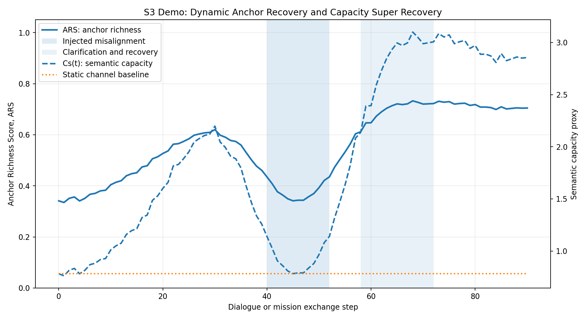
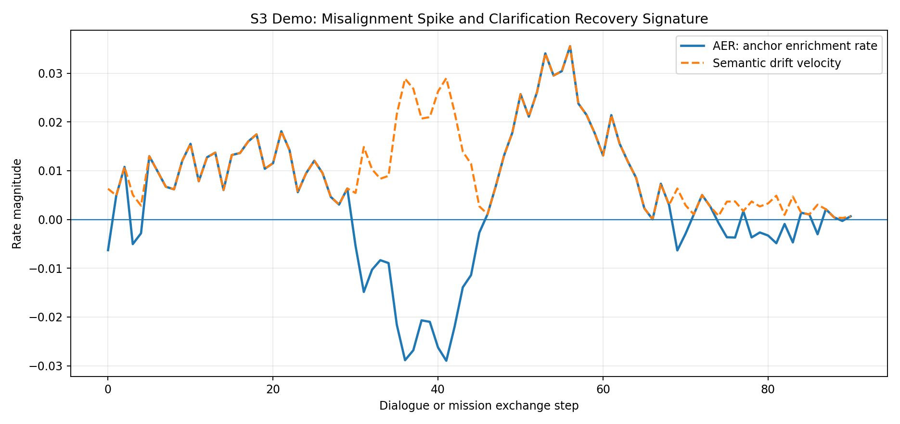
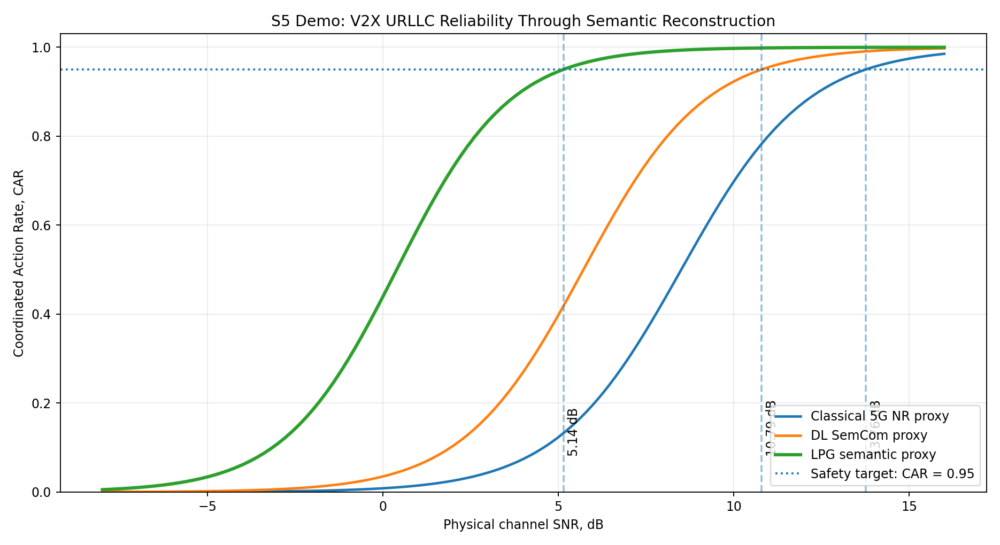
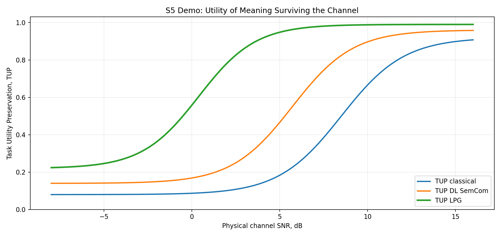

Generated locally by spacex_semantic_demo.py on 2026-05-26 20:55:44.
This executable is a compact, deterministic proxy slice from a larger LPG semantic communication simulation programme. It is designed for a short engineering review where the reviewer can click one file, watch the calculations run, and immediately inspect plots, CSV data, and a report.
The two chosen demonstrations are:
This live demo is not a replacement for CARLA, SUMO, ns 3, Sionna, or transformer based end to end training. It is the executable engineering abstraction of the larger report.
Interpretation: ARC above 1.0 means the post clarification capacity envelope exceeds the earlier pre break envelope. This supports the project claim that a semantic receiver is not merely decoding symbols but adapting the shared interpretive anchor.


Interpretation: CAR is the probability that the receiving agent executes the correct intended action. In autonomous coordination, this is more operationally meaningful than symbol error alone. The LPG curve reaches the safety target earlier because anchor enriched reconstruction supplies context that the physical channel does not carry by itself.
| System | CAR = 0.95 threshold | Meaning of result |
|---|---|---|
| Classical 5G NR proxy | 13.76 dB | Symbol fidelity dominated baseline |
| DL SemCom proxy | 10.79 dB | Task feature compression baseline |
| LPG semantic proxy | 5.14 dB | Anchor enriched action reconstruction |


Thirty second version: This demo shows that my work treats communication as preservation and reconstruction of meaning, not merely symbol delivery. S3 demonstrates adaptive recovery of semantic capacity when a shared anchor is repaired. S5 demonstrates that an autonomous system can reach the correct action at lower SNR because the receiver uses a shared semantic anchor to reconstruct intent.
Engineering caveat: The curves here are proxy models. The value of the demo is that the metrics, assumptions, equations, and generated files are explicit and reproducible. A production validation would plug the same metrics into a full CARLA, SUMO, ns 3, Sionna and transformer stack.
data/S3_anchor_dynamics_live_demo.csvdata/S5_v2x_urllc_live_demo.csvplots/S3_anchor_dynamics_capacity.pngplots/S3_AER_drift_velocity.pngplots/S5_CAR_vs_SNR_thresholds.pngplots/S5_TUP_vs_SNR.png